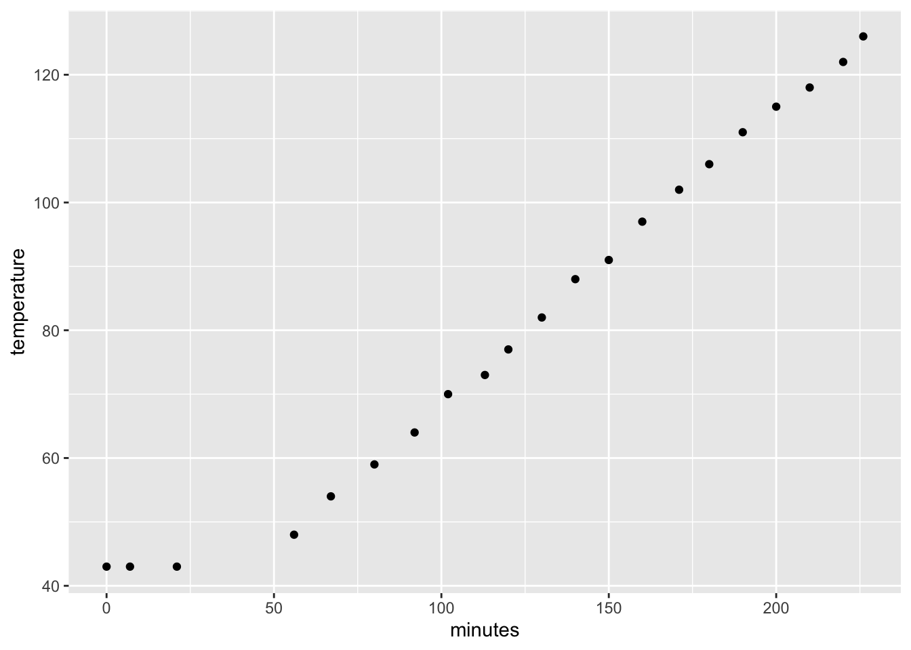
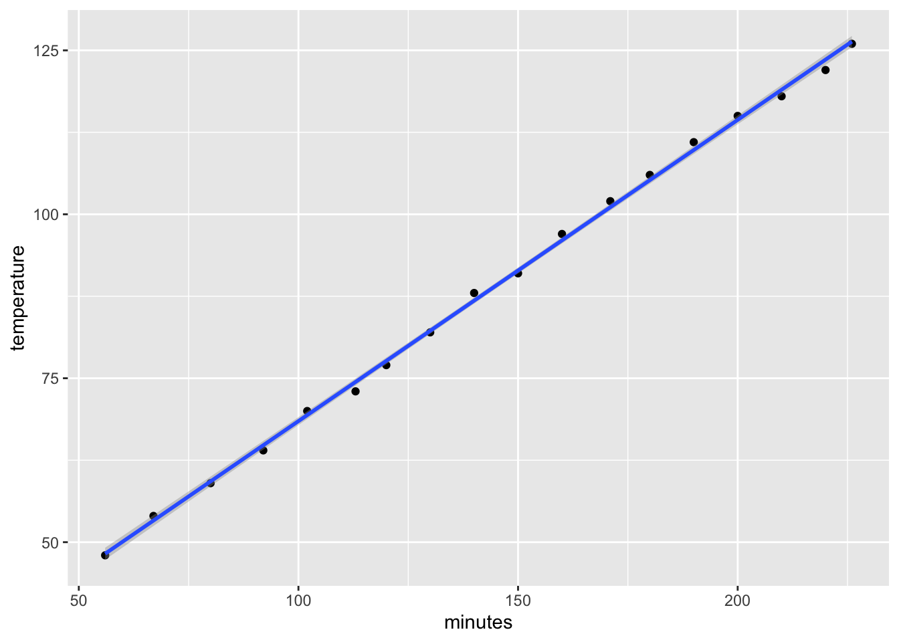

We started a new family Christmas Eve tradition with roast prime rib. This year was a 6.61 lb bone on prime rib.
library(dplyr)##
## Attaching package: 'dplyr'## The following objects are masked from 'package:stats':
##
## filter, lag## The following objects are masked from 'package:base':
##
## intersect, setdiff, setequal, unionlibrary(ggplot2)
dat <- tbl_df(read.csv("../datasets/Prime_rib_temp.csv"))I followed the Serious Eats recipe.
I cut off the bone then salted and let the bones and meat dry brine overnight. I tied them back together around noon and put them in a 200 degree Fahrenheit oven. The temperature didn’t budge for most of the first hour and then it was a reasonably linear rise in temperature until I took it out when the meat was 125 degrees. It went up to 135 while resting for an hour.
ggplot(dat, aes(x = minutes, y = temperature)) + geom_point()
What a beautiful line! Taking off the first few observations, we can put on a regression line.
dat %>% filter(temperature >45) %>%
ggplot(aes(x = minutes, y = temperature)) +
geom_point() + geom_smooth(method = "lm")
I decided to fit a regression model to that line to see how linear it was.
dat2 <- dat %>% filter(temperature > 45)
model1 <- lm(temperature ~ minutes, dat2)
summary(model1)##
## Call:
## lm(formula = temperature ~ minutes, data = dat2)
##
## Residuals:
## Min 1Q Median 3Q Max
## -1.5854 -0.5930 -0.2445 0.7671 1.1959
##
## Coefficients:
## Estimate Std. Error t value Pr(>|t|)
## (Intercept) 22.522427 0.643147 35.02 <2e-16 ***
## minutes 0.459377 0.004181 109.88 <2e-16 ***
## ---
## Signif. codes: 0 '***' 0.001 '**' 0.01 '*' 0.05 '.' 0.1 ' ' 1
##
## Residual standard error: 0.9197 on 16 degrees of freedom
## Multiple R-squared: 0.9987, Adjusted R-squared: 0.9986
## F-statistic: 1.207e+04 on 1 and 16 DF, p-value: < 2.2e-16The coefficient was 0.46 degrees per minute with an R squared of 0.999!